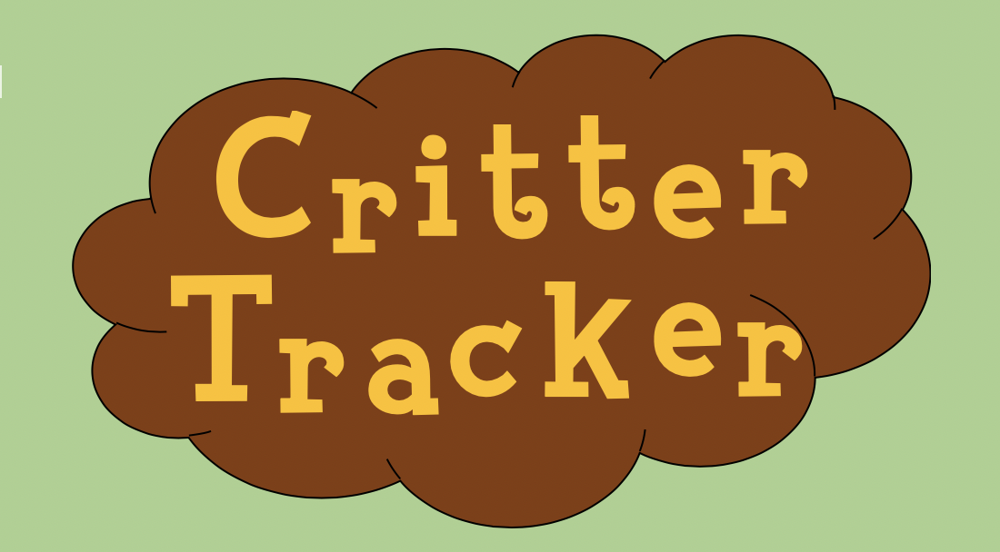

Critter Tracker is a place to log the critters that you would like collectibles of! Enter the name of the critter you would like to make a collectible, add how many you have, and mark it as completed once you receive the item.
Enter the critter you would like to collect: